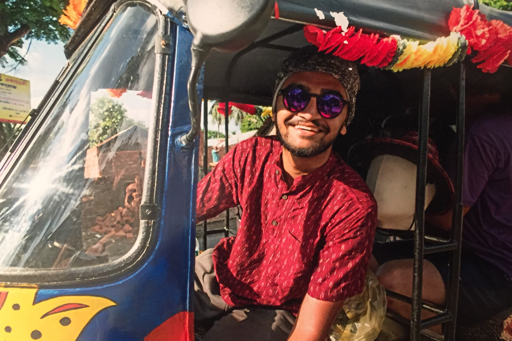
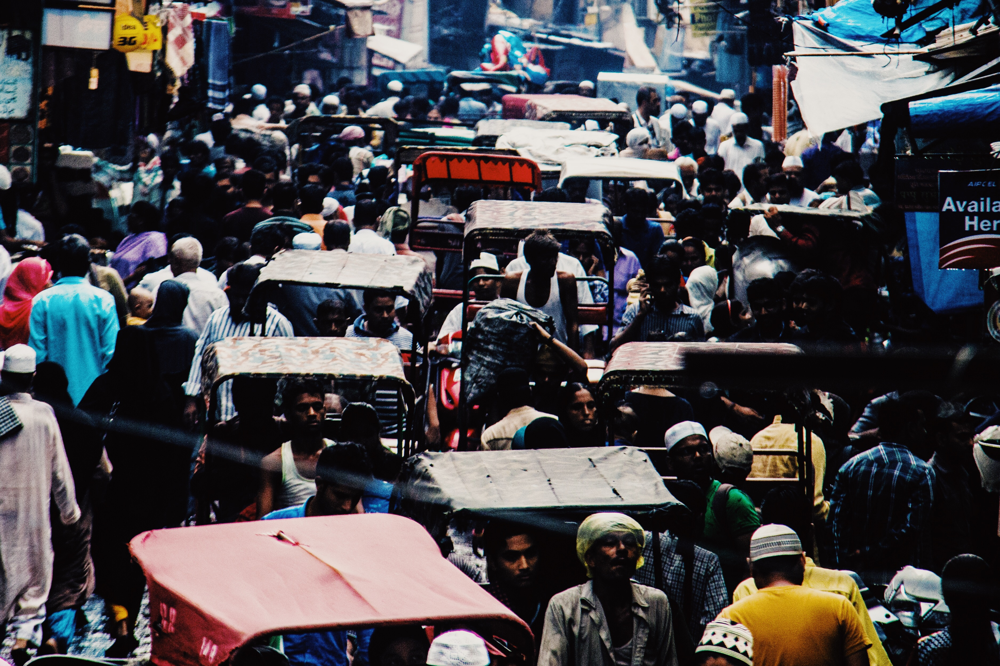
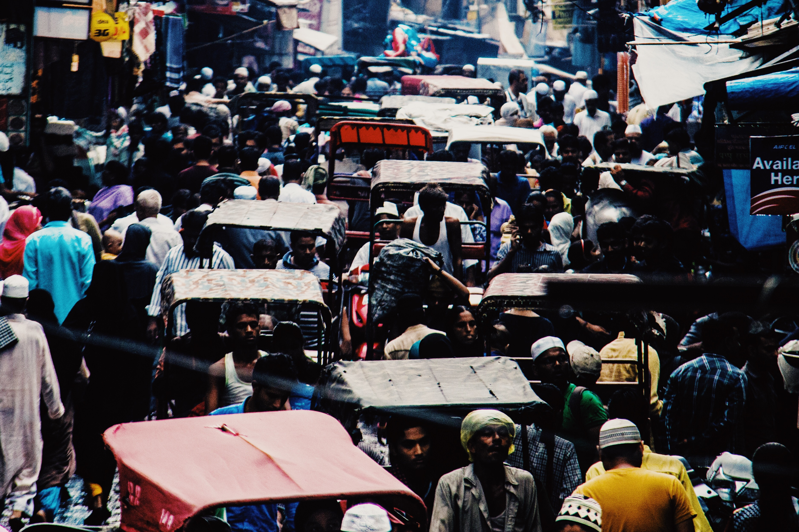

Hi, I'm Krish!
As a designer, when actualizing any idea it's only normal to be wary or critical of the current state of affairs. This dissent with a product, certain behavior, policies, etc., enables creativity and growth that I think is necessary for change.
Projects that influence this sort of change and give power to the contributors to incite discourse is what I want to spend my time on.
———
I spent the first 18 years of my life between an Indian city, Surat, and a British boarding school. The disparity between the philosophies of my parents and my school often led to confusion but eventually manifested a cherished perspective and attitude on life. The totality of that experience and the revered memories from it shaped the core of my identity.
Since then, I've moved to New York after spending 4 years in green gray Seattle. I've earned a degree in Human-Computer Interaction and acquired an ambition for thoughtful projects and originality. If you know of anything within an array of possibilities and could profit from my input, please send me an email at krishangswami@gmail.com.
———
I'm also not a fan of cover letters which with a couple of paragraphs aim to capture and showcase the identity and intention of a person. For that reason along with a little about me, I decided to curate some of my photographs with music that I enjoy below.
The photographs are some of my favorites from over the last couple of years. Some are shot on film, some on DSLRs and some on phone. And the songs are just temporary addictions during moments in time that kinda, not always, fit the vibe of the photographs.

That one time I drove a Rickshaw
Hands down one of the more exciting (and dangerous) things I've done with my life.
Watch short video here.


 
